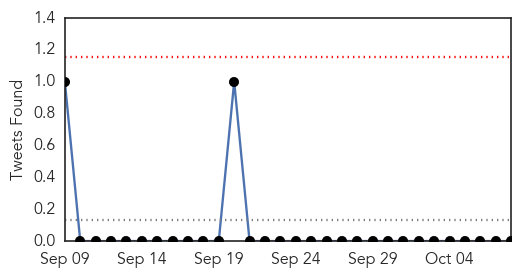
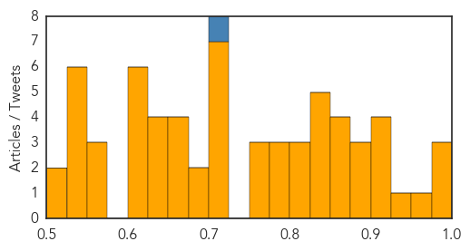

Dengue Fever
30-Day Web Trend
19 alerts, 9 warnings

30-Day Twitter Trend
0 alerts, 0 warnings

Article Locations

Article Confidences

Top Articles:
- 0.997
- Zika Disease: Another Reason to Hate Mosquitoes
- 0.994
- Rapid changes in weather lead to dengue of ailments in Mumbai
- 0.971
- CHO advises: “Get that 4 o’clock habit!”
- 0.960
- India faces worst dengue fever outbreak in years with more than 6,500 confirmed cases - India
- 0.958
- Dengue crisis: Delhi govt notices to 14 doctors
- 0.927
- Dengue cases drop by 40% in Davao City
- 0.925
- PAHO/WHO helps Bahamas cope with health impact of Hurricane Joaquin - Bahamas
- 0.901
- Dengue cases add up in Varanasi as patients keep coming back
- 0.870
- Dengue death toll in Bulacan rises to 12
- 0.850
- Soaring numbers: In Rawalpindi, 48 more dengue cases reported
- 0.837
- Study links dengue fever outbreaks with El Niño
- 0.828
- Ludhiana: Health dept finds dengue larvae in 100 tyres
- 0.811
- Study: Link between dengue epidemics and high temperatures during strong El Niño season
- 0.779
- Catholic Church joins war on dengue, rebuke of loan shark scandal
- 0.735
- The curse that is dengue
- 0.584
- Dengue cases in Davao down
Top Tweets:
-
No tweets found for Oct 08, 2015
Unknown
30-Day Web Trend
0 alerts, 0 warnings

30-Day Twitter Trend
2 alerts, 0 warnings
Article Locations
Article Confidences
Top Articles:
- 0.997
- Japanese outbreak heightens awareness of Getah virus in horses
- 0.981
- CDC Hopes This Year’s Flu Shots Will Be More Effective
- 0.978
- EYES OPEN, PLEASE....
- 0.965
- Health Ministry to Continue Monitoring Schools Affected By Hand, Foot and Mouth Disease
- 0.937
- Health Ministry to Continue Monitoring Schools Affected By Hand, Foot and Mouth Disease
- 0.917
- Chicago Tribune
- 0.917
- Chicago Tribune
- 0.917
- Chicago Tribune
- 0.916
- AVOID THE FLU BY GETTING AN EARLY SHOT!
- 0.892
- Protect yourself from the flu
- 0.880
- Wyoming's First-Ever Case Of Human Rabies Ends In Death Of 77-Year-Old Woman
- 0.875
- Rare Diseases like Chagas and Leprosy are Becoming more Commonplace in the U.S.
- 0.868
- UN: Polio vaccines in Ukraine safe despite local concerns
- 0.866
- China to spend $1.5 bln to subsidize hospital reform in 2016
- 0.857
- Ethiopia takes step to eliminate river blindness
- 0.857
- Salmonella unmasked as major killer of young children in Africa
- 0.847
- Salmonella unmasked as major killer of young children in Africa
- 0.841
- UN: Polio vaccines in Ukraine safe despite local concerns
- 0.832
- Nasal-spray shortage means older students will get flu shots
- 0.831
- Salmonella unmasked as major killer of young children in Africa
- 0.830
- 12 hospitals that might make you sicker
- 0.821
- Second child sickened by E. coli after Oxford fair visit improves — Health — Bangor Daily News — BDN Maine
- 0.820
- State awaiting results of tests from Oxford fairgrounds as it investigates 2 E. coli cases
- 0.800
- Cambridgeshire health bosses lead the way in getting first flu jabs
- 0.788
- The surgery was successful but the patient died – make sure this isn’t you
- 0.786
- Deadly Food Poisoning Cases In 35 States Spread To Maryland Amid Recalls
- 0.784
- Gonorrhea treatments may lose effectiveness
- 0.765
- AstraZeneca Presents Respiratory Syncytial Virus (RSV) Study Results at IDWeek 2015
- 0.760
- South Bay Teen Battling Flesh-Eating Bacteria Undergoes 10th Surgery
- 0.751
- Natural Remedies For Cold & Flu For Kids
- 0.715
- Wyoming marks first known rabies fatality with death of woman, 77
- 0.707
- German prosecutors raid VW offices amid emissions probe
- 0.707
- Hero of French train attack Spencer Stone stabbed in California
- 0.707
- French far right’s Marine Le Pen clashes with Hollande
- 0.707
- Canadian PM Harper turns niqab into major campaign issue
- 0.707
- Brazil's Rousseff loses legal battle, faces impeachment threat
- 0.706
- Japanese encephalitis patients in Cordillera recovering
- 0.690
- Top Vector Control officials withdraw resignations
- 0.678
- Gov't dropped the ball on virus spread in schools, says Opposition
- 0.667
- Breaking the fever
- 0.664
- Costly Protection - KAUZ-TV: Newschannel 6 Now
- 0.655
- Photos: Preparing to keep children safe from extreme weather in the Pacific
- 0.652
- Profits for Haiti: Commercial Real Estate Experts Do Their Part to Help Survivors
- 0.645
- Malaria confirmed as cause of teacher’s illness
- 0.639
- WHO: Don't delay HIV treatment
- 0.637
- Mitsui Credit Global Comments as South Korea Cuts Rates On MERS
- 0.631
- New Case of Rabies Reported in Lane County
- 0.620
- Flu season is here; time to get your shot
- 0.619
- Health « ISN Blog
- 0.618
- Blog: Health Dept. gives flu shots
Showing top 50 articles...
Top Tweets:
- 0.853
- UK panel doesn't support use of flu drugs for regular cases of season flu but sees benefit for hospitalized cases. https://t.co/WrZqrwklVX
- 0.780
- RT: Y nunca me cansaré de repetirlo: lo que decís en un momento de calentura, ya lo habías pensado alguna vez en frío.
- 0.779
- Nadie sabe lo que tiene o no,hasta que tiene un problema de salud
- 0.746
- RT: Cuando sabemos que la mano de Dios está en todo, podemos dejarlo todo, absolutamente TODO en las manos de Dios!
- 0.743
- RT: Tengo un tic en el que me acomodo un auricular aunque esté bien puesto y subo el volumen de la música. Lo uso mucho cuando …
- 0.600
- Nunca le toques el pelo a alguien sin antes pedir permiso y esperar de respuesta un no.
- 0.595
- La música de solistas de piano me lleva a un estado alterado de conciencia.
- 0.568
- Choléra : Sept communes en alerte rouge, dont Marigot, victime de l’incrédulité d’un patient https://t.co/f7ckE9KaRq via
- 0.548
- RT: Problemón del general de Corpoelec Q ahora tiene Venezuela sinluz es Q La Electricidad No es Un Recluta de Cuartel Obedece…
- 0.548
- El día de perros que tuve cerró con broche de oro sinluz
- 0.532
- RT: El cachamay es tremendo estadio de Fútbol pero con mineros cayéndose a patadas todos los finde, ya la pobre parece un se…
- 0.528
- RT: Es genial esto de buscar un planeta que tenga posibilidades de alojarnos así podemos terminar de hacer mierda este sin tant…